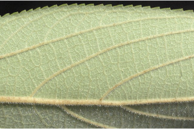
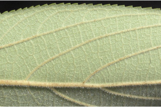
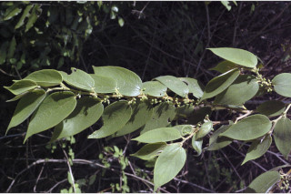
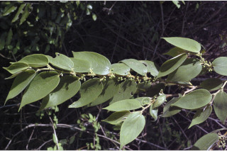

Trees up to 5 m tall.
5 ಮೀ. ಎತ್ತರದವರೆಗಿನ ಮರಗಳು.
Trees up to 5 m tall.
மரங்கள் 5 மீ. உயரம் வரை வளரக்கூடியது.
Bark brownish, with corky lenticels; blaze reddish with white streaks.
ತೊಗಟೆ ಕಂದು ಬಣ್ಣದಲ್ಲಿದ್ದು,ನಯವಾಗಿರುತ್ತದೆ ಮತ್ತು ಹೆಚ್ಚು ಬೆಂಡಿನ ಅಂಶವುಳ್ಳ ವಾಯುವಿನಿಮಯ ಬೆಂಡು ರಂಧ್ರಗಳ ಸಮೇತವಿರುತ್ತವೆ;ಕಚ್ಚು ಮಾಡಿದ ಜಾಗ ಕೆಂಪು ಛಾಯೆ ಹೊಂದಿದ್ದು ಬಿಳಿ ಬಣ್ಣದ ಗೆರೆಗಳ ಸಮೇತವಿರುತ್ತದೆ.
Bark brownish, with corky lenticels; blaze reddish with white streaks.
மரத்தின் பட்டை ப்ரவுன் நிறமானது, கார்க் போன்ற பட்டைத்துளைகள் (லெண்டிசெல்லேட்) உடையது; உள்பட்டை சிவப்பு நிறமானது மற்றும் வெள்ளை நிறமான புள்ளிகளுடையது.
Young branchlets terete, grey pubescent.
ಕಿರುಕೊಂಬೆಗಳು ದುಂಡಾಗಿದ್ದು,ಬೂದು ಬಣ್ಣದ ಮೃದುತುಪ್ಪಳದಿಂದ ಕೂಡಿರುತ್ತವೆ.
Young branchlets terete, grey pubescent.
சிறியநுனிக்கிளைகள் குறுக்குவெட்டுத் தோற்றத்தில் வளையமானது, சாம்பல் நிறமானது உரோமங்களுடையது.
Leaves simple, alternate, distichous; stipules lateral, pubescent, caducous and leaving scar; petiole up to 0.5-1 (4.5) cm long, canaliculate above, pubescent; lamina 3.5-7.5 x 2.5-5 cm, ovate to lanceolate, apex acuminate, base asymmetric and subcordate, margin serrate, scabrid, canescent beneath; 3-5-nerved at base; midrib canaliculate above; secondary_nerves ca. 4 pairs; tertiary_nerves distantly horizontally percurrent.
ಎಲೆಗಳು ಸರಳವಾಗಿದ್ದು ಪರ್ಯಾಯ ಮಾದರಿಯಲ್ಲಿ ಜೋಡಣೆಯಾಗಿದ್ದು, ಕಾಂಡದ ಎರಡೂ ಕಡೆ ಎದುರು ಬದರಿನ ಲಂಬ ಸಾಲಿನಲ್ಲಿರುತ್ತವೆ;ಕಾವಿನೆಲೆಗಳು ಪಾರ್ಶ್ವದಲ್ಲಿದ್ದು ಮೃದುತುಪ್ಪಳದಿಂದ ಕೂಡಿರುತ್ತವೆ,ಉದುರುವ ಮಾದರಿಯಲ್ಲಿದ್ದು ಉದುರಿ ಹೋದ ನಂತರ ಗುರುತುಗಳನ್ನು ಉಳಿಸುತ್ತವೆ;ತೊಟ್ಟುಗಳು 0.5-1(4.5) ಸೆಂ.ಮೀ.ವರೆಗಿನ ಉದ್ದವಿದ್ದು, ಮೇಲ್ಭಾಗದಲ್ಲಿ ಕಾಲುವೆಗೆರೆ ಸಮೇತವಿರುತ್ತವೆ, ಮೃದುತುಪ್ಪಳದಿಂದ ಕೂಡಿರುತ್ತವೆ ;ಪತ್ರಗಳು 3.5 – 7.5 X 2.5 - 5 ಸೆಂ.ಮೀ. ಗಾತ್ರ, ಅಂಡಾಕಾರದಿಂದ ಭರ್ಜಿಯವರೆಗಿನ ಆಕಾರ ಹೊಂದಿದ್ದು, ಕ್ರಮೇಣ ಚೂಪಾಗುವವರೆಗಿನ ತುದಿ, ಅಸಮ್ಮಿತಿಯಾದ ಮತ್ತು ಉಪಹೃದಯಾಕಾರದ ಬುಡ,ಗರಗಸ ದಂತಿತ ಅಂಚು,ಒರಟಾದ ಮೇಲ್ಮೈ ಹೊಂದಿದ್ದು, ತಳ ಭಾಗದಲ್ಲಿ ಸೂಕ್ಷ್ಮವಾದ ಬಿಳಿ ಕೂದಲುಗಳಿಂದ ಕೂಡಿರುತ್ತದೆ ; ಪತ್ರಗಳ ಬುಡದಲ್ಲಿ 3-5 ನಾಳಗಳಿರುತ್ತವೆ; ಮಧ್ಯನಾಳ ಪತ್ರದ ಮೇಲ್ಭಾಗದಲ್ಲಿ ಕಾಲುವೆಗೆರೆ ಸಮೇತವಿರುತ್ತದೆ;ಎರಡನೇ ದರ್ಜೆಯ ನಾಳಗಳು ಅಂದಾಜು 4 ಜೋಡಿಗಳಿರುತ್ತವೆ; ಮೂರನೇ ದರ್ಜೆಯ ನಾಳಗಳು ಅಂತರ ಹೊಂದಿದ್ದು, ಜಾಲಬಂಧ ನಾಳ ವಿನ್ಯಾಸದವುಗಳಾಗಿದ್ದು ಎಲೆಯ ದಿಂಡಿಗೆ ಅಡ್ಡವಾಗಿ ಕೂಡುವ ಮಾದರಿಯಲ್ಲಿರುತ್ತವೆ.
Leaves simple, alternate, distichous; stipules lateral, pubescent, caducous and leaving scar; petiole up to 0.5-1 (4.5) cm long, canaliculate above, pubescent; lamina 3.5-7.5 x 2.5-5 cm, ovate to lanceolate, apex acuminate, base asymmetric and subcordate, margin serrate, scabrid, canescent beneath; 3-5-nerved at base; midrib canaliculate above; secondary_nerves ca. 4 pairs; tertiary_nerves distantly horizontally percurrent.
இலைகள் தனித்தவை, மாற்றுஅடுக்கமானவை, இருநெடுக்கு வரிசையிலையடுக்கம் (டைஸ்டிக்கஸ்); இலையடிச்செதில் பக்கவாட்டில் அமைந்தவை, உரோமங்களுடையது, எளிதில் உதிரக்கூடியது மற்றும் தழும்புகளை ஏற்படுத்துகின்றன; இலைக்காம்பு 0.5-1 (4.5) செ.மீ. நீளமானது, குறுக்குவெட்டுத் தோற்றத்தில் கேனாலிகுலேட், உரோமங்களுடையது; இலை அலகு 3.5-7.5 X 2.5-5 செ.மீ., முட்டை வடிவானது முதல் ஈட்டி வடிவானது, அலகின் நுனி அதிக்கூரியது, அலகின் தளம் சமமற்றது மற்றும் சிறிய இதய வடிவானது, அலகின் விளிம்பு ரம்ப பற்களுடையது, அலகின் கீழ்பரப்பு சொரசொரப்பானது, அலகின் கீழ்பரப்பு வெள்ளை நிற மெழுகுபூசியது (கேனசெண்ட்) போன்றது; தளத்திலே 3-5 நரம்புகளை உடையது; மையநரம்பு மேற்புறத்தில் அலகின் பரப்பைவிட பள்ளமானது; இரண்டாம் நிலை நரம்புகள் 4 ஜோடிகள்; மூன்றாம் நிலை நரம்புகள் விளிம்பு நோக்கிய இணையான அகன்ற பெர்க்கரண்ட்..
Flowers unisexual, dioecious, in axillary fascicles or cymes; sessile.
ಹೂಗಳು ಏಕಲಿಂಗಿಗಳು,ಗಂಡು ಮತ್ತು ಹೆಣ್ಣು ಹೂಗಳು ಪ್ರತ್ಯೇಕ ಸಸ್ಯಗಳಲ್ಲಿರುತ್ತವೆ, ಅಕ್ಷಾಕಂಕುಳಿನಲ್ಲಿನ ಗುಚ್ಛಗಳಲ್ಲಿ ಅಥವಾ ಮಧ್ಯಾರಂಭಿ ಮಂಜರಿಯಲ್ಲಿರುತ್ತವೆ; ಹೂಗಳು ತೊಟ್ಟುರಹಿತವಾಗಿರುತ್ತವೆ.
Flowers unisexual, dioecious, in axillary fascicles or cymes; sessile.
மலர்கள் ஓர் பாலானவை, ஈரகம் கொண்டவை, இலைக்கோணங்களில் தொகுப்பாக காணப்படுபவை அல்லது சைம் வகை மஞ்சரி; காம்பற்றது.
Drupe, globose, 0.4 cm long, black when ripe; seed one.
ಡ್ರೂಪ್ಗಳು ಗೋಳಾಕಾರದಲ್ಲಿದ್ದು,0.4 ಸೆಂ.ಮೀ. ಉದ್ದವಿರುತ್ತವೆ,ಕಳಿತಾಗ ಕಪ್ಪು ಬಣ್ಣ ಹೊಂದಿರುತ್ತವೆ; ಬೀಜಗಳ ಸಂಖ್ಯೆ 1.
Drupe, globose, 0.4 cm long, black when ripe; seed one.
உள்ளோட்டுத்தசைகனி (ட்ரூப்), கோள வடிவமானது, 0.4 செ.மீ. நீளமானது, கனியும் போது கருப்பு நிறமானது; ஒர் விதையுடையது.


 


 
